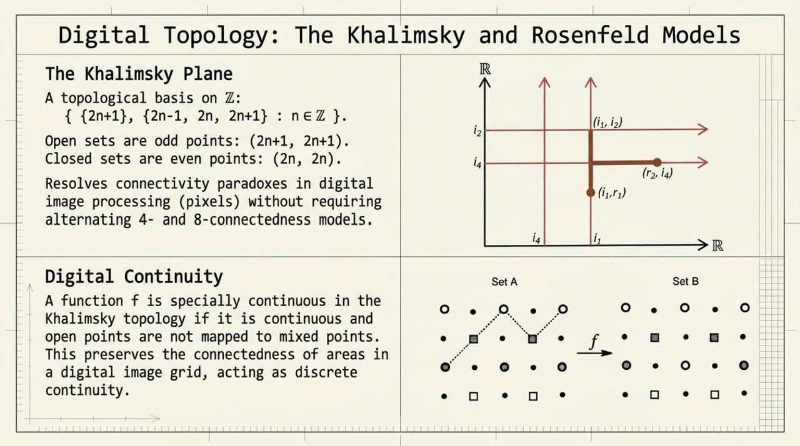

기둥 2 · 공간의 성질 · 12장
픽셀의 연결 역설 — 옆자리를 어떻게 정할까
4-이웃, 8-이웃, 그리고 끊긴 고리와 새는 호수
4-이웃, 8-이웃, 그리고 끊긴 고리와 새는 호수
핵심 질문 — 픽셀 그림에서 「옆에 붙어 있다」를 어떻게 정해야 닫힌 고리가 안과 밖을 제대로 나눌까?
사진은 네모난 픽셀(점)들의 모음, 곧 이산 위상의 세계예요. 그런데 「두 픽셀이 이어져 있다」를 정하려면 「옆자리」 규칙이 필요해요. 가로세로만 옆자리로 치는 4-이웃, 대각선까지 치는 8-이웃 — 어느 쪽을 골라도 이상한 일이 생겨요.
숫자 요약은 이 장의 예시 계산에서 나온 값입니다(실제 데이터가 아닌 설명용 값).
오늘은 조별 토론이에요. 픽셀조는 4-이웃, 바람조는 8-이웃 편!
가로세로만 이웃이죠. 대각선은 모서리만 닿잖아요.
모서리도 닿은 건 닿은 거예요!
행렬·벡터, 복잡한 공식을 몰라도 됩니다. 그림을 움직여 보고, 밑줄 친 말을 누르면 뜻이 나옵니다.
시아4-이웃, 8-이웃, 연결 역설…
모아고리가 끊겼다가 새고…?
이론 시간. 시아와 모아가 머리를 감싸 쥐었다.
하루바둑이랑 체스 둘 다 알지?
그때 하루가 박사 몰래 살금살금 다가왔다.
하루가로세로로만 걷는 바둑 걸음으로는 대각선 고리를 못 따라가서 고리가 끊겨 보여. 대각선도 걷는 체스 왕 걸음이면 고리는 이어지는데, 안에 갇힌 물도 대각선 틈으로 빠져나가! 그래서 「옆자리」를 정하는 게 어려운 거야.
하루의 비밀 설명 시간.
시아규칙 따라 답이 달라지는구나!
모아숫자 보기 전에 규칙부터!
박사는 멀리서 못 본 척 웃었다.
픽셀 그림에서 「이어졌다」는 우리가 정한 옆자리 규칙에 달려 있어요.
가로세로만 옆자리로 치면 대각선 선이 끊겨 보여요. 대각선까지 치면 선은 이어지지만 고리 안쪽도 새 버려요.
그래서 사진 속 물체를 셀 때는 「어떤 규칙으로 셌는지」부터 확인해야 해요.
이 페이지 사용법: 밑줄 친 말을 누르면 뜻이 나옵니다(Esc로 닫기). 단계마다 그림을 직접 움직여 보고, 끝의 확인 퀴즈로 점검하세요. 앞 장: 11 순서 그림과 이웃 행렬 — 내 섬을 위아래로 줄 세우기
픽셀조는 「4-이웃(가로세로만)이 옳다」, 바람조는 「8-이웃(대각선까지)이 옳다」를 주장해요. 그림판 실험으로 각 규칙의 약점을 찾아냅니다.
마름모 고리를 4-이웃으로 보면 픽셀이 대각선으로만 이어져 있어서 하나하나 끊겨요.
그래서 8-이웃이 필요해요! 그럼 고리가 이어지죠.
8-이웃이면 고리 안쪽 흰 바탕도 대각선으로 빠져나가. 그건 어떻게 할 거야?
06장의 연결은 열린 집합으로 정했어요. 픽셀 세상에서는 「옆자리」 규칙이 그 역할을 해요.
같은 그림이 규칙에 따라 1조각도, 16조각도 돼요. 「숫자 결과 전에 규칙 확인」 습관을 길러요.
두 역설을 한꺼번에 해결하는 위상이 다음 장의 칼림스키 위상이에요.
그림판에서 픽셀을 직접 눌러 보는 게 가장 빨라요. 결과 문장이 바로 바뀌어요.
상황 질문 — 바둑판 위 대각선으로 놓인 돌들을 따라 가로세로로만 걸을 수 있다면, 돌에서 돌로 건너갈 수 있을까요?
옆자리를 「좌표 차이」로 말한다는 게 무슨 뜻이에요?
학교 수학으로 보면: 중학교 「좌표평면」이에요. 두 픽셀 (3, 5)와 (4, 5)는 x만 1 차이 — 그 차이를 (1, 0)으로 적어요.
| 식 조각 | 읽는 법 | 뜻 |
|---|---|---|
| (±1, 0), (0, ±1) | 플러스마이너스 일 영 … | 4-이웃의 좌표 차이 4가지 |
| (±1, ±1) | 대각선 차이 | 8-이웃에 더해지는 4가지 |
| |x| + |y| = 4 | 마름모 | 실험 그림의 고리 모양 |
마름모 고리의 픽셀 (5, 1)과 (6, 2): 차이 (1, 1) → 대각선
4-이웃 목록 (±1, 0), (0, ±1)에 (1, 1)이 없음 → 옆자리 아님
고리의 이웃한 픽셀 쌍이 모두 대각선 → 4-이웃으로는 16개 픽셀이 16조각
차이 벡터가 목록에 있느냐 없느냐로 옆자리를 판정하는군요!
픽셀의 자리는 좌표 (x, y) — 숫자 두 개짜리 벡터예요. 두 픽셀의 자리를 빼면 「차이 벡터」가 나와요: (6, 2) − (5, 1) = (1, 1).
4-이웃은 차이 벡터가 (1, 0), (−1, 0), (0, 1), (0, −1) 중 하나일 때, 8-이웃은 여기에 (±1, ±1) 네 개를 더한 8개 중 하나일 때예요. 「옆자리 규칙」을 「벡터 목록」으로 적을 수 있어요.
(3, 3)과 (3, 4): 차이 (0, 1) → 4-이웃 ○, 8-이웃 ○
(3, 3)과 (4, 4): 차이 (1, 1) → 4-이웃 ×, 8-이웃 ○
(3, 3)과 (5, 3): 차이 (2, 0) → 둘 다 ×
행렬·벡터를 처음 본다면 이 상자는 건너뛰어도 본문을 따라올 수 있어요.
대각선으로 놓인 바둑돌을 가로세로 걸음으로만 따라가면 돌에서 돌로 못 건너가요. 눈으로는 이어진 줄인데 걸음으로는 끊겨요.
4-이웃 규칙에서 대각선 고리는 이어지지 않아 여러 조각으로 보여요. 그런데 흰 바탕도 4-이웃이면 안쪽이 막혀 「끊긴 고리가 안과 밖을 나누는」 역설이 생겨요.
규칙을 「4 / 4」로 두고 결과 문장을 읽어 보세요.
고리 덩어리 16개! 그런데 안쪽은 막혀 있다네요?
끊겼는데 막았다 — 그게 첫 번째 역설이야.
원자료 「Digital Topology: The Khalimsky and Rosenfeld Models」의 「4·8-연결 모델을 번갈아 쓸 필요 없이」 문장.

상황 질문 — 체스의 왕은 대각선으로도 걸어요. 왕이 마름모 울타리 안에 갇혀 있다면, 대각선 틈으로 빠져나갈 수 있을까요?
왕의 걸음이면 마름모 울타리의 대각선 틈으로 빠져나가요. 울타리가 이어져 보여도 왕을 가두지 못해요.
8-이웃이면 고리는 1조각이지만, 흰 바탕도 8-이웃이면 안과 밖이 이어져 「이어진 고리가 안팎을 못 가르는」 역설이 생겨요. 검은 8 / 흰 4로 섞으면 두 역설이 모두 사라지지만, 색마다 규칙이 다른 게 어색해요.
「8 / 8」과 「8 / 4」를 번갈아 눌러 보세요.
8 / 8이면 고리가 이어졌어요! 바람조 승리!
결과 둘째 줄을 봐. 안쪽이 새고 있어.
원자료의 「Resolves connectivity paradoxes in digital image processing (pixels) without requiring alternating 4- and 8-connectedness models」.
하루가 AI에게 마름모 고리 그림을 주고 「검은 고리는 몇 조각이에요?」라고만 물었어요.
「몇 개?」라는 질문의 답은 「무엇을 같은 덩어리로 치느냐」에 달려 있어요. AI에게 규칙부터 밝히게 하세요.
|x| + |y| = 4 모양으로 놓인 검은 픽셀 16개를 4-이웃 규칙으로 세면 몇 조각인지 맞붙었어요.
「이웃한 픽셀이 전부 대각선이야. 16조각.」
「눈으로 보면 이어진 고리예요. 1조각!」
누가 맞을지 먼저 예상해 보고 단추를 누르세요. 판정은 계산 결과로만 합니다.
개념정리 흐름: 4-이웃 → 8-이웃과 혼합 규칙
| 개념 | 한 줄 뜻 | 일상 비유 | 비유의 한계 |
|---|---|---|---|
| 4-이웃 | 가로세로만 옆자리 | 바둑판 걸음 | 대각선 선을 끊어요 |
| 8-이웃 | 대각선까지 옆자리 | 체스 왕 걸음 | 안쪽이 대각선으로 새요 |
| 8 / 4 혼합 | 검은 선 8, 흰 바탕 4 | 색마다 다른 걸음 | 하나의 위상으로 설명되지 않아요 |
토론 결과: 무승부. 둘 다 역설이 있어요. 해결책은 다음 장에!
규칙부터 확인 — 이게 오늘의 교훈이에요.
왕이 대각선으로 탈출하는 건 반칙 같아요.
다음 장 예고: 13장은 계산배틀이에요. 홀수 점은 열리고 짝수 점은 닫힌 칼림스키 직선·평면이 두 역설을 한꺼번에 해결해요.